Explore Kathmandu
A Brief History
Kathmandu Valley kingdoms built pagoda temples, palace squares, and Buddhist stupas from the Licchavi period through Malla rule. Durbar Squares in Kathmandu, Patan, and Bhaktapur preserve Newar woodcarving and tiered roof architecture beneath the Himalaya foothills. Swayambhunath stupa and Pashupatinath ghats extend valley temple geography beneath Himalayan gateways.
Attractions Map
Top Sights & Activities
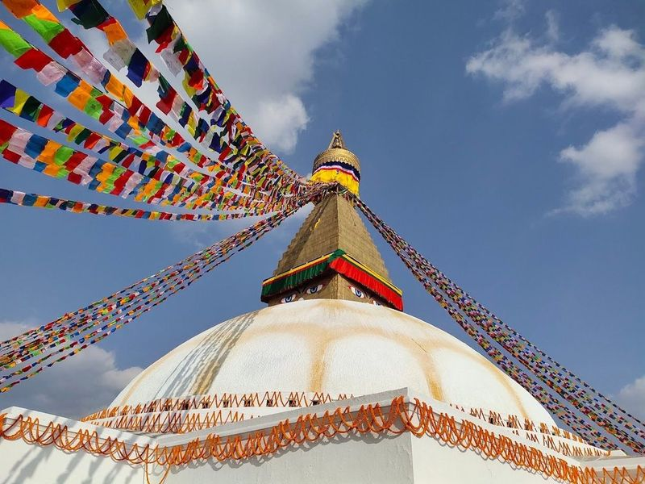
Buddha Stupa
Buddha Stupa, also known as Boudhanath Stupa, is a significant Buddhist site located in Nepal. It features a large white dome topped with a towering golden spire and is considered the largest stupa in the world. The area surrounding the stupa is home to a community of Tibetans and Sherpas who have built monasteries in the vicinity.
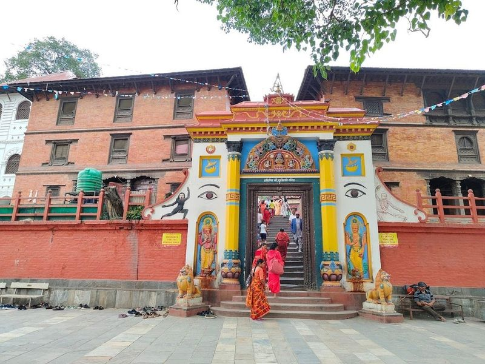
Guhyeshwari Shaktipeeth Temple
Nestled in the heart of Kathmandu, Guhyeshwari Shaktipeeth Temple is a captivating destination for spiritual seekers and cultural enthusiasts alike. This sacred site, dedicated to the goddess Guhyeshwari or Adi Shakti, boasts a rich history dating back to its renovation by King Pratap Malla in the 17th century.
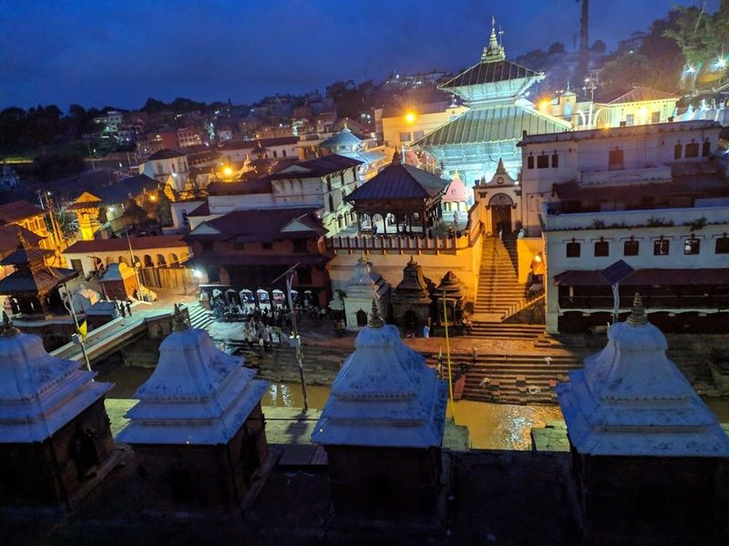
Pashupatinath Temple
Nestled along the serene banks of the Bagmati River, Pashupatinath Temple stands as a revered symbol of Hindu spirituality and culture. This temple, rebuilt in the 15th century, is dedicated to Lord Shiva and features pagoda-style architecture adorned with gilt roofing and intricately carved silver doors. As one of the holiest sites for Hindus worldwide, it attracts countless pilgrims, especially during significant festivals like Shivaratri.
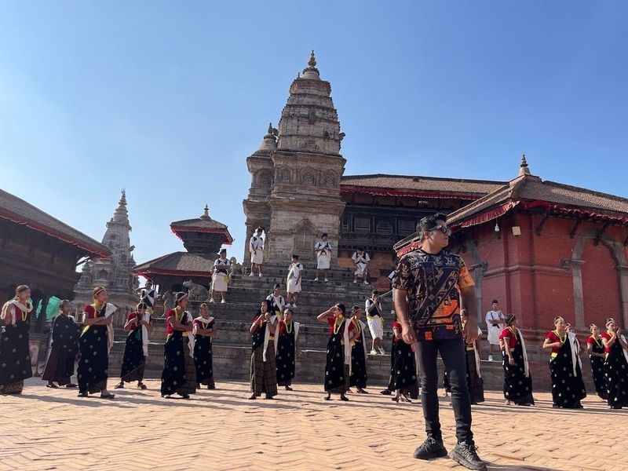
Bhaktapur Durbar Square
Bhaktapur Durbar Square, a UNESCO World Heritage Site, is the heart of the city and boasts a 1427 CE palace, numerous temples, statues, and intricate gates. The square is a treasure trove of stone art, metal art, wood carving, and terracotta art. Visitors can marvel at architectural showpieces like the Golden Gate and the statue of King Bhupatindra Malla atop stone monoliths.
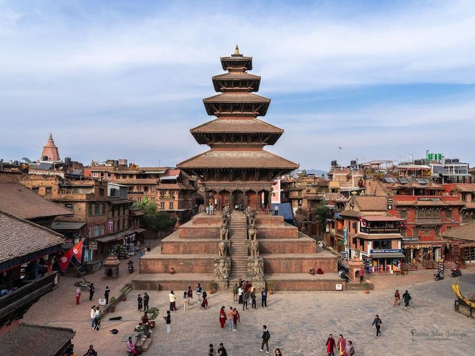
Nyatapola Temple
Nyatapola Temple is a Hindu temple located in Bhaktapur Durbar Square, Nepal. It features a remarkable five-tiered pagoda that reaches 30 meters into the sky, making it one of the tallest buildings in the Kathmandu Valley. Built in 1702, this architectural marvel dedicated to the goddess Siddhi Lakshmi has withstood earthquakes and remains an impressive sight with its harmonious proportions and exquisite wood carvings.
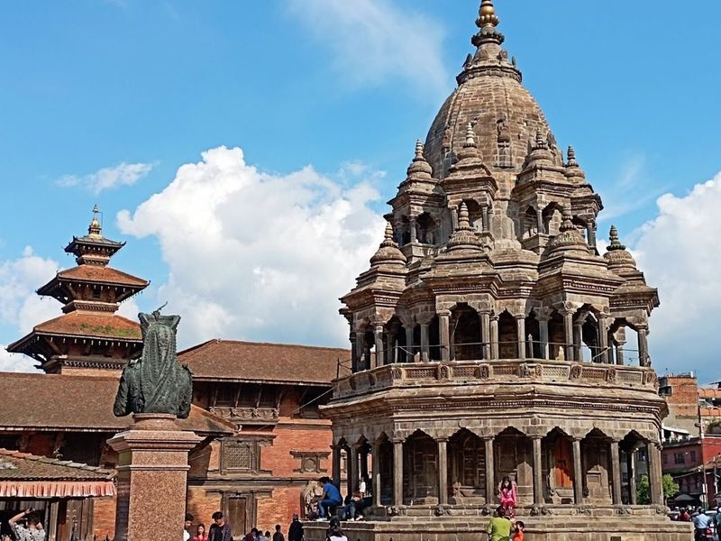
Patan Darbar Square
Patan Darbar Square, located in Lalitpur, is a historic area in Nepal known for its ancient buildings and temples. The square houses the Old Royal Palace, Golden Temple, and Mahaboudha Temple. Visitors can explore the area's old houses adorned with intricate wood carvings and shop for traditional handicrafts and paintings.
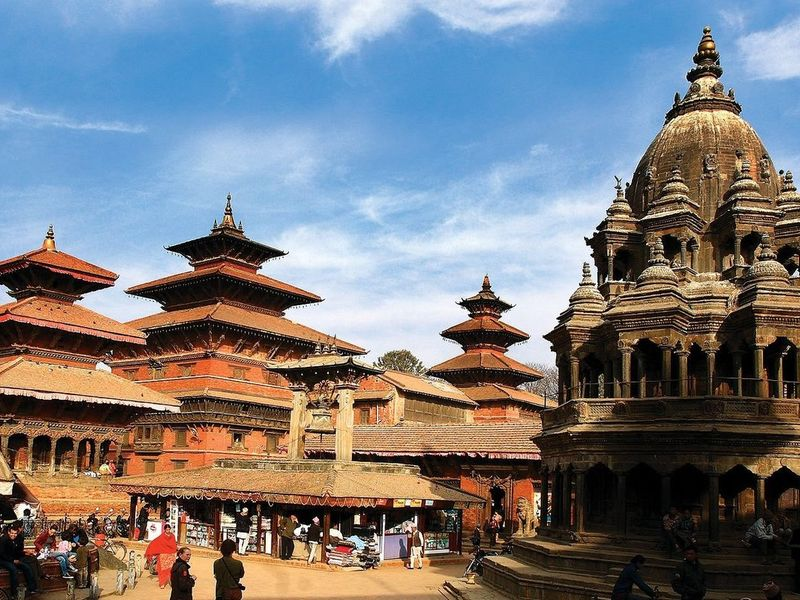
Krishna Mandir
Krishna Temple, also known as Krishna Mandir, is a 3-tiered Hindu temple located in Patan Durbar Square. Built in 1637 by King Siddhinarsingh Malla, this architectural marvel features intricate stone carvings and showcases the influence of Indian temple design. It is the earliest stone temple of its kind in Nepal and withstood the 2015 earthquake.
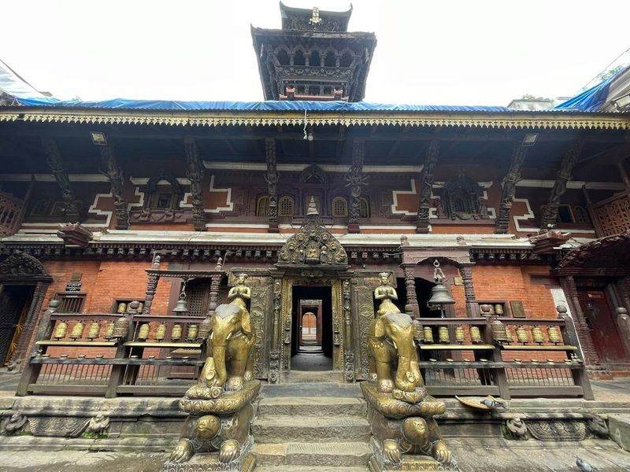
Hiranya Varna Mahavihar
Hiranya Varna Mahavihar, also known as the Golden Temple, is a centuries-old Newa Buddhist monastery constructed around 1409. Despite its nickname, the temple's golden luster comes from polished gilded copper rather than pure gold. The main courtyard houses ornate brass statues and other elements plated in gold, offering a rich historical and cultural experience for visitors. It is important to note that leather clothing is not permitted inside the temple.
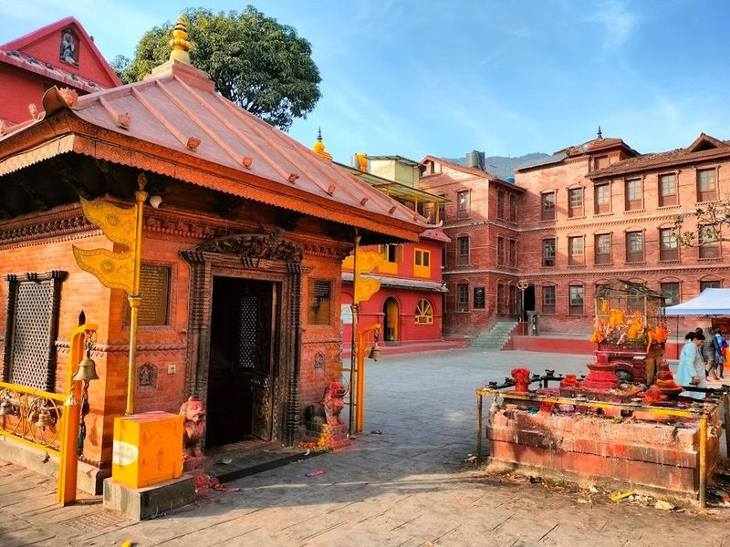
Budhanilkantha Temple
Nestled at the base of Shivapuri Hill in Kathmandu, Budhanilkantha Temple is a open-air Hindu shrine dedicated to Lord Vishnu. This sacred site is renowned for its impressive 5-meter-long reclining statue of Vishnu, carved from a single block of black stone and often referred to as 'Sleeping Vishnu.'.
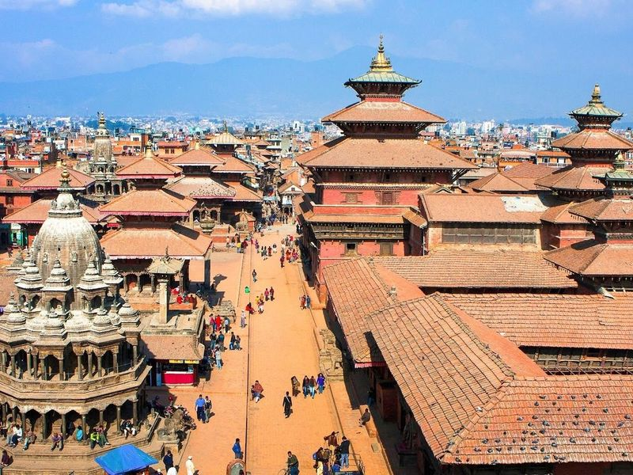
Kathmandu Durbar Square
Kathmandu Durbar Square is a captivating landmark nestled in the heart of old Kathmandu, specifically at Basantapur. This ancient royal complex showcases an impressive array of palaces, temples, and courtyards that date back to the Malla period. Visitors are greeted by structures such as the Hanuman Dhoka Royal Palace, which served as the seat of royalty, and Kumari Ghar, home to the Living Goddess.
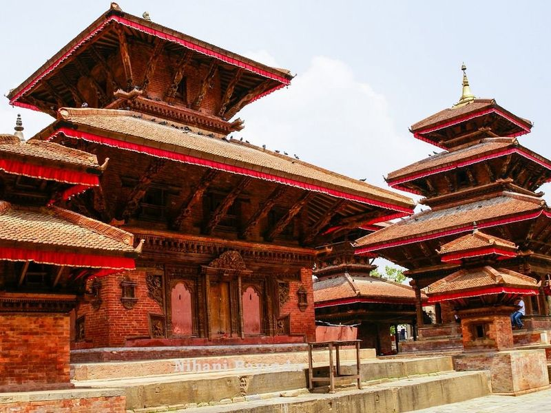
Kasthamandap
Kasthamandap is a significant historical site in Kathmandu, dating back to the 7th century A.D. It was initially a temple but has since been transformed into a wood-covered shelter. The temple, located in Hanuman Dhoka Durbar Square, is believed to have been constructed from a single tree and served as a podium for sacred ceremonies before being dedicated to Saint Gorakhnath.
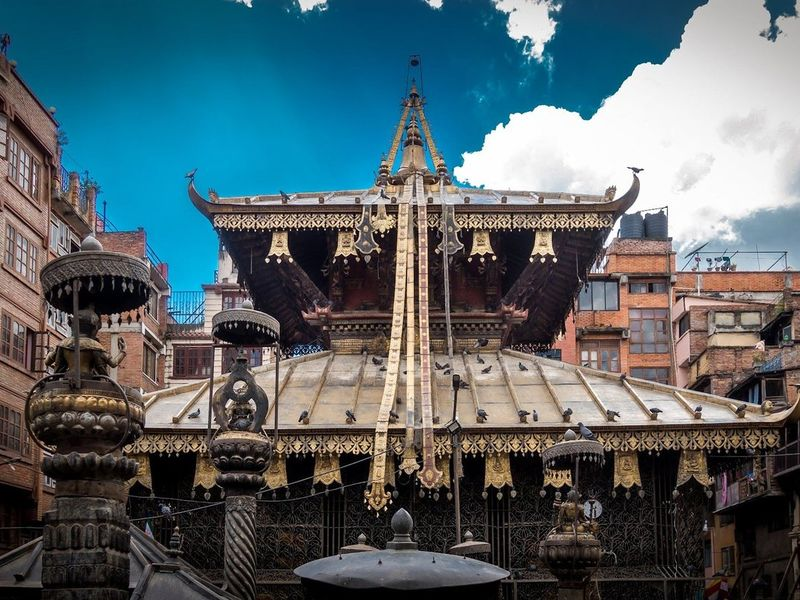
Janabaha Dyo (Seto MachhindraNath Temple)
The Seto Machhindra Nath Temple, located in Jana Bahal, Kathmandu, is a captivating pagoda-style structure adorned with intricately carved stone pillars depicting various deities. This revered Hindu temple, dedicated to the god of rain, attracts both Buddhist and Hindu visitors. The temple houses an idol of Seto Machindranath (Janabaha Dyp), believed to have been constructed around the 10th century.
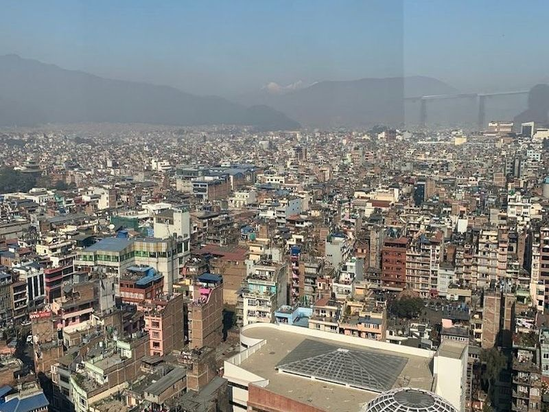
Dharahara
Dharahara, also called Bhimsen Tower, was a prominent historical monument in Kathmandu. Built in 1832 by Prime Minister Bhimsen Thapa, it stood at nine stories tall and offered panoramic views of the city. Despite surviving an earthquake in 1834, it was ultimately destroyed by another quake in 1934.
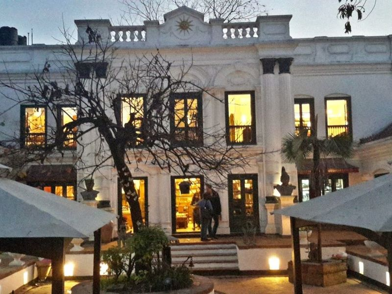
Baber Mahal Revisited
Baber Mahal Revisited is a captivating destination that beautifully blends history with modern charm. This trendy complex, set within the elegant restoration of an early 20th-century royal palace, offers visitors a delightful experience filled with boutique shops and exquisite dining options. The meticulous restoration of the original structures transports guests to another era while providing access to high-quality crafts and clothing.
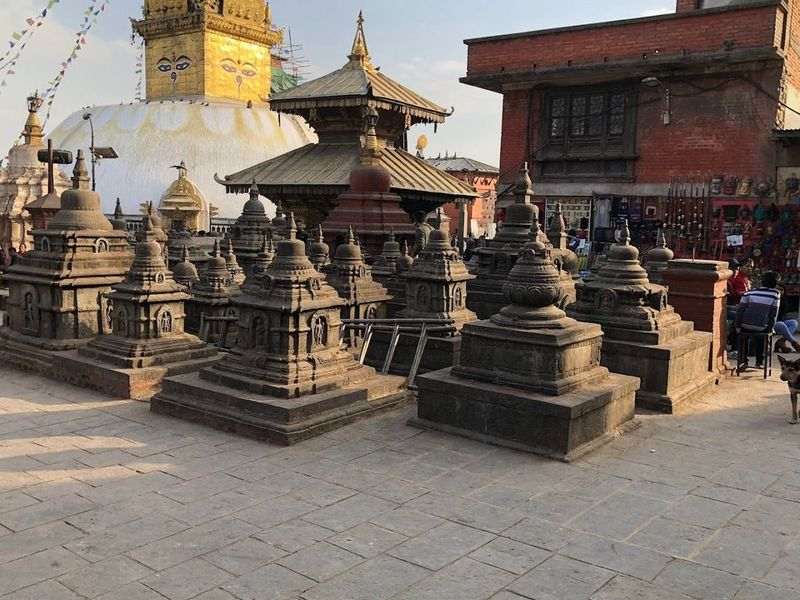
Swayambhu Mahachaitya
Swoyambhu Mahachaitya, also known as Monkey Temple, is a sacred Buddhist complex located in the western part of Kathmandu. This ancient religious site features an stupa, numerous temples, and shrines. The stupa at Swoyambhu Mahachaitya holds great significance for both Buddhists and Hindus in Kathmandu and has been designated as a World Heritage Site by UNESCO since 1979.
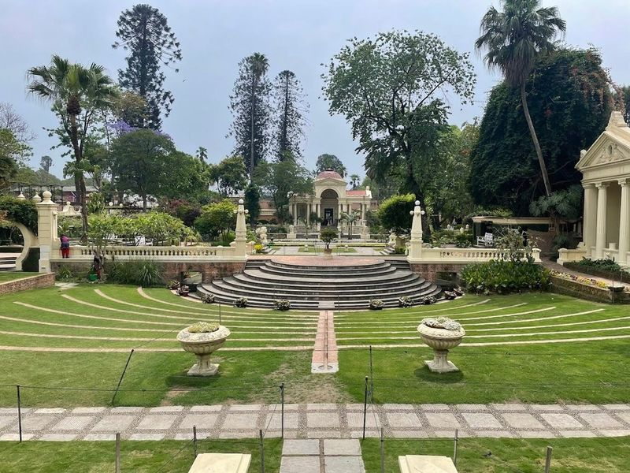
Garden of Dreams
Nestled on the edge of the bustling Thamel district, the Garden of Dreams is a serene escape that transports you back to 1920. Originally designed for field marshal Kaiser Shumsher in an elegant English Edwardian style, this enchanting garden features six charming pavilions, tranquil fountains, and beautifully landscaped grounds adorned with urns and birdhouses. After falling into disrepair post-1964, it underwent a restoration between 2000 and 2007 with support from Austria.